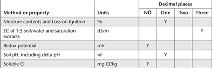

Unique code numbers identify each method. Other important considerations when reporting results of soil chemical analyses are moisture status, the units of reporting, and the uncertainty of the analytical results (see Appendix 2). This Appendix builds on the corresponding section in Rayment and Higginson (1992) for soil chemical tests.
Guidelines on soil moisture status have been given with individual soil chemical methods and are also discussed in Chapters 1 and 2. Except for EC and pH, which cannot be readily adjusted to a moisture-free basis by simple calculations, it is common to report analytical results for soil and land-use surveys and for mass-balance studies on an oven-dry basis. In contrast, the majority of soil tests performed for ‘fertility’ or ‘diagnostic’ purposes need only be reported on an air-dry basis. Soil test reports should clearly state the moisture status of all results.
There is unavoidable uncertainty with all test results (see Appendix 2). The reporting guidelines that follow integrate reporting convenience with what should be achievable analytically using well prepared samples and competent, experienced laboratories.
For example, a number such as 35.4 should indicate that the analyst is certain of the ‘35’ but accepts that the ‘0.4’ portion is less certain. It follows that with a number such as 70.0, the analyst should be confident of the ‘70’. This would arise from rounding numbers falling anywhere between 69.6–70.5. If only ‘70’ is reported, the assumption is that the ‘true’ value lies confidently between 66–75. See Appendix 3 for alternative units for expressing results, which will almost always affect the numeric values. Nevertheless, the same reporting principles apply. Table App. 1.1 provides guidance on how many decimal places to use for specified tests and units.
Table App. 1.1. Guidelines for reporting soÕ chemical results, sequenced by chapter.

Rayment GE and Higginson FR (1992) Australian Laboratory Handbook of Soil and Water Chemical Methods. Inkata Press, Port Melbourne.